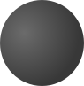

о планете
Марс - это четвертая планета от Солнца. Его масса составляет 6,39E23 kg. Атмосферное давление на марсе составляет 6.01 мбар, а уровень кислорода в ней достигает всего лишь 0,145%. Температуры достигают от -153 до +35 градусов Цельсия. Один год на Марсе равен 687 дней
Как люди покоряют Марс
Человечество активно изучает эту планету. На данный момент NASA запустила уже 4 марсохода:
Cоджорнер

Оппортюнити

Кьюриосити

Персевиранс


Спутники Марса

Фобос

Деймос

Возможно, однажды Марс станет
второй планетой, приютившей человечество